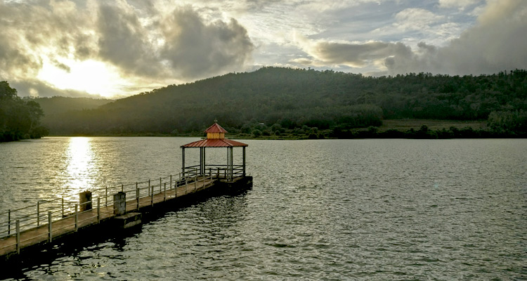

Frequently Asked Questions
Twenty honest answers to help you plan a smooth Chikkamagaluru holiday.
FAQ
Everything you need to know
Still unsure? WhatsApp us and a real person will reply.
What is the best time to visit Chikkamagaluru?
September to February is the best time for Chikkamagaluru tours. Post-monsoon months bring lush green hills, full waterfalls and clear sunrise views from Mullayanagiri. June to August is ideal if you love heavy mist and roaring falls.
How many days are enough for a Chikkamagaluru trip?
Two days cover the main viewpoints, three days add waterfalls and temples, and our five day Chikkamagaluru package covers peaks, waterfalls, Hoysala temples, wildlife safari and Sringeri comfortably without rushing.
Do you provide taxi service in Chikkamagaluru?
Yes. We offer Chikkamagaluru taxi service with Hatchback, Sedan, SUV, Mini Van and Tempo Traveller options for local sightseeing, outstation trips and airport transfers, available 24×7 with experienced ghat-road drivers.
Which airport is nearest to Chikkamagaluru?
Mangaluru International Airport is about 160 km away and Kempegowda International Airport, Bengaluru is about 250 km. We provide airport taxi from both, including late-night pickups with a name board.
Can you arrange a jeep for Hebbe Falls and Jhari Falls?
Yes. Private vehicles are not allowed on the final stretch to Hebbe Falls and Jhari Falls. We pre-book the local jeep ride so you avoid long queues, and the cost can be included in your package.
Is Mullayanagiri suitable for elderly travellers?
Yes. The road goes almost to the top and only around 400 steps remain to the temple. Elderly guests can enjoy the views from the parking area and Seethalayyana Giri, which needs no climbing.
Do you offer customised tour packages?
Every itinerary is customisable. Share your dates, group size, budget and must-visit places and we build a personalised plan covering Chikkamagaluru, Karnataka or wider South India.
What vehicles are available for group travel?
For groups we provide 12-seater and 17-seater Tempo Travellers, Mini Vans and multiple SUVs with a coordinator. All vehicles are sanitised, insured and driven by verified local drivers.
Are hotel and homestay bookings included?
We can include coffee estate homestays, budget hotels or luxury resorts in your package. We only recommend properties we have personally inspected in and around Chikkamagaluru.
How do I book a tour with Nithesh Tours And Travels?
Call or WhatsApp +91 94822 42996, or submit the enquiry form on this website. We share a detailed itinerary and quote, and confirm your trip with a small advance.
What is your cancellation policy?
Cancellations more than 7 days before travel are refunded in full minus transaction charges. Please read our cancellation policy page for the complete schedule.
Are there ATMs and mobile network on the route?
ATMs and reliable network are available in Chikkamagaluru town. Network is patchy at Mullayanagiri, Kemmangundi, Kudremukh and inside estates, so carry some cash and download offline maps.
Is Bhadra Wildlife Safari worth it?
Yes. Bhadra Tiger Reserve safari offers sightings of elephants, gaur, sambar, wild dogs and occasionally leopards or tigers. Morning safaris have the best sighting chances and must be booked in advance.
Can we visit Belur and Halebidu in one day?
Absolutely. Belur Chennakeshava Temple, Halebidu Hoysaleshwara and Kedareshwara temples plus Yagachi Dam form a comfortable one-day circuit from Chikkamagaluru, about 35 to 40 km away.
Do you provide drivers who speak English or Hindi?
Our drivers speak Kannada, Hindi and conversational English. Request your preferred language while booking and we assign a suitable driver.
Are your packages family and child friendly?
Yes. We plan shorter driving segments, frequent breaks, child-safe waterfalls and vegetarian-friendly restaurant stops for family tours in Karnataka.
What should I pack for a Western Ghats trip?
Carry light woollens, a rain jacket during monsoon, comfortable trekking shoes, mosquito repellent, sunscreen, personal medication and a power bank.
Do you organise trekking in Chikkamagaluru?
We arrange guided treks to Mullayanagiri, Z Point at Kemmangundi, Bandekallu Gudda and Kudremukh routes with local guides and permits wherever required.
Is there an extra charge for hill station driving?
No hidden hill charges. Our quotation clearly mentions kilometres, driver allowance, toll and parking so you know the final amount before the trip begins.
Do you serve destinations outside Karnataka?
Yes. We operate South India tour packages covering Andhra Pradesh, Tamil Nadu, Kerala, Maharashtra and Goa with the same vehicles, drivers and transparent pricing.
Ready to wake up above the clouds?
Call us for same-day availability, customised itineraries and honest pricing. No hidden charges, ever.
✔ 10+ Years Experience✔ Verified Local Drivers
✔ Transparent Pricing✔ 24×7 Support